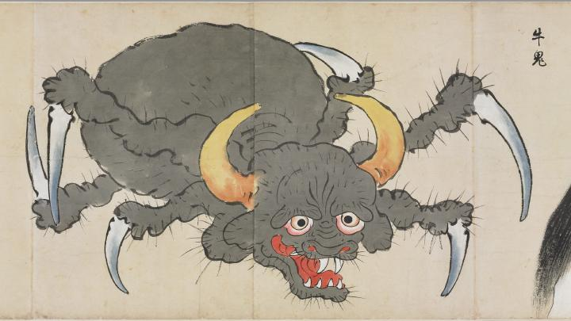

牛のような頭部と、蜘蛛のような胴体を持つ化物。黄色く鋭い角が2本生えている。6本の足の先には、鎌のような鋭い爪が伸びている。
著作者：北斎季親／出典：親書誌：U426_nichibunken_0052：化物尽絵巻；バケモノヅクシエマキ／日付：2007／資源識別子：U426_nichibunken_0052_0017_0000
Copyright (c)2010- International Research Center for Japanese Studies, Kyoto, Japan. All rights reserved.